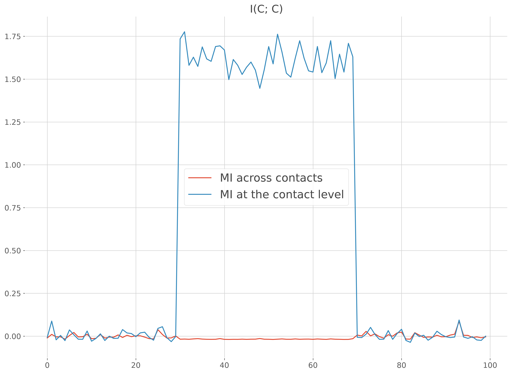
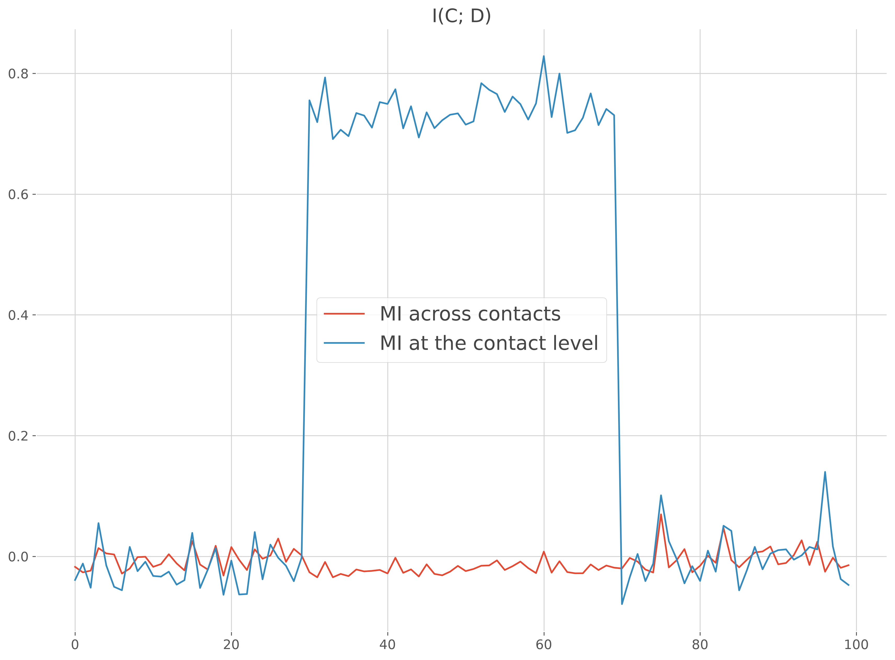
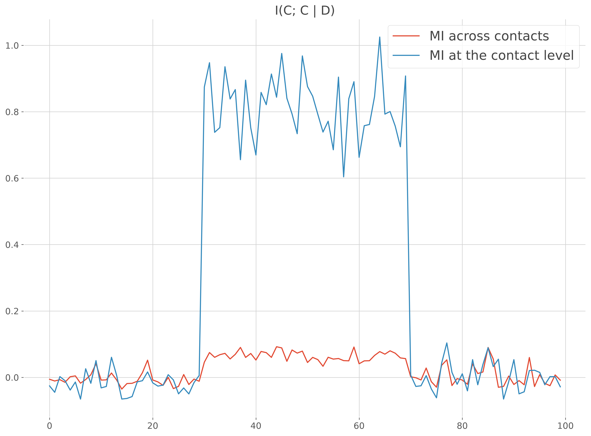

Note
Go to the end to download the full example code.
Mutual-information at the contact level#
This example illustrates how to compute the mutual information inside each brain region and also by taking into consideration the information at a lower anatomical level (e.g sEEG contact, MEG sensor etc.).
import numpy as np
import pandas as pd
import xarray as xr
from frites.dataset import DatasetEphy
from frites.workflow import WfMi
from frites.core import mi_nd_gg
from frites import set_mpl_style
import matplotlib.pyplot as plt
set_mpl_style()
I(Continuous; Continuous) case#
Let’s start by simulating by using random data in combination with normal distributions. To explain why it could be interesting to consider the information at the single contact level, we generate the data coming from one single brain region (‘roi_0’) but with two contacts inside (‘c1’, ‘c2’). For the first the contact, the brain data are going to be positively correlated with the normal distribution while the second contact is going to have negative correlations. If you concatenate the data of the two contacts, the mix of positive and negative correlations break the monotonic assumption of the GCMI. In that case, it’s better to compute the MI per contact
n_suj = 3
n_trials = 20
n_times = 100
half = int(n_trials / 2)
times = np.arange(n_times)
x, y, roi = [], [], []
for suj in range(n_suj):
# initialize subject's data with random noise
_x = np.random.rand(n_trials, 2, n_times)
# normal continuous regressor
_y = np.random.normal(size=(n_trials,))
# first contact has positive correlations
_x[:, 0, slice(30, 70)] += _y.reshape(-1, 1)
# second contact has negative correlations
_x[:, 1, slice(30, 70)] -= _y.reshape(-1, 1)
x += [_x]
y += [_y]
roi += [np.array(['roi_0', 'roi_0'])]
# now, compute the mi with default parameters
ds = DatasetEphy(x, y=y, roi=roi, times=times, agg_ch=True)
mi = WfMi(mi_type='cc').fit(ds, mcp='noperm')[0]
# compute the mi at the contact level
ds = DatasetEphy(x, y=y, roi=roi, times=times, agg_ch=False)
mi_c = WfMi(mi_type='ccd').fit(ds, mcp='noperm')[0]
# plot the comparison
plt.figure()
plt.plot(times, mi, label="MI across contacts")
plt.plot(times, mi_c, label="MI at the contact level")
plt.legend()
plt.title('I(C; C)')
plt.show()

0%| | Estimating MI : 0/1 [00:00<?, ?it/s]
100%|██████████| Estimating MI : 1/1 [00:00<00:00, 50.36it/s]
100%|██████████| Estimating MI : 1/1 [00:00<00:00, 49.87it/s]
0%| | Estimating MI : 0/1 [00:00<?, ?it/s]
100%|██████████| Estimating MI : 1/1 [00:00<00:00, 59.40it/s]
100%|██████████| Estimating MI : 1/1 [00:00<00:00, 58.88it/s]
I(Continuous; Discret) case#
Same example as above except that this time the MI is compute between the data and a discret variable
x, y, roi = [], [], []
for suj in range(n_suj):
# initialize subject's data with random noise
_x = np.random.rand(n_trials, 2, n_times)
# define a positive and negative offsets of 1
_y_pos, _y_neg = np.full((half, 1), 1.), np.full((half, 1), -1.)
# first contact / first half trials : positive offset
_x[0:half, 0, slice(30, 70)] += _y_pos
# first contact / second half trials : negative offset
_x[half::, 0, slice(30, 70)] += _y_neg
# second contact / first half trials : negative offset
_x[0:half, 1, slice(30, 70)] += _y_neg
# second contact / second half trials : positive offset
_x[half::, 1, slice(30, 70)] += _y_pos
x += [_x]
y += [np.array([0] * half + [1] * half)]
roi += [np.array(['roi_0', 'roi_0'])]
times = np.arange(n_times)
# now, compute the mi with default parameters
ds = DatasetEphy(x, y=y, roi=roi, times=times)
mi = WfMi(mi_type='cd').fit(ds, mcp='noperm')[0]
# compute the mi at the contact level
ds = DatasetEphy(x, y=y, roi=roi, times=times, agg_ch=False)
mi_c = WfMi(mi_type='cd').fit(ds, mcp='noperm')[0]
# plot the comparison
plt.figure()
plt.plot(times, mi, label="MI across contacts")
plt.plot(times, mi_c, label="MI at the contact level")
plt.legend()
plt.title('I(C; D)')
plt.show()

0%| | Estimating MI : 0/1 [00:00<?, ?it/s]
100%|██████████| Estimating MI : 1/1 [00:00<00:00, 42.74it/s]
100%|██████████| Estimating MI : 1/1 [00:00<00:00, 42.44it/s]
0%| | Estimating MI : 0/1 [00:00<?, ?it/s]
100%|██████████| Estimating MI : 1/1 [00:00<00:00, 64.44it/s]
I(Continuous ; Continuous | Discret) case#
Same example as above except that this time the MI is compute between the data and a discret variable
x, y, z, roi = [], [], [], []
for suj in range(n_suj):
# initialize subject's data with random noise
_x = np.random.rand(n_trials, 2, n_times)
# define a positive and negative correlations
_y_pos = np.random.normal(loc=1, size=(half))
_y_neg = np.random.normal(loc=-1, size=(half))
_y = np.r_[_y_pos, _y_neg]
_z = np.array([0] * half + [1] * half)
# first contact / first half trials : positive offset
_x[0:half, 0, slice(30, 70)] += _y_pos.reshape(-1, 1)
# first contact / second half trials : negative offset
_x[half::, 0, slice(30, 70)] += _y_neg.reshape(-1, 1)
# second contact / first half trials : negative offset
_x[0:half, 1, slice(30, 70)] += _y_neg.reshape(-1, 1)
# second contact / second half trials : positive offset
_x[half::, 1, slice(30, 70)] += _y_pos.reshape(-1, 1)
x += [_x]
y += [_y]
z += [_z]
roi += [np.array(['roi_0', 'roi_0'])]
times = np.arange(n_times)
# now, compute the mi with default parameters
ds = DatasetEphy(x, y=y, z=z, roi=roi, times=times)
mi = WfMi(mi_type='ccd').fit(ds, mcp='noperm')[0]
# compute the mi at the contact level
ds = DatasetEphy(x, y=y, z=z, roi=roi, times=times, agg_ch=False)
mi_c = WfMi(mi_type='ccd').fit(ds, mcp='noperm')[0]
# plot the comparison
plt.figure()
plt.plot(times, mi, label="MI across contacts")
plt.plot(times, mi_c, label="MI at the contact level")
plt.legend()
plt.title('I(C; C | D)')
plt.show()

0%| | Estimating MI : 0/1 [00:00<?, ?it/s]
100%|██████████| Estimating MI : 1/1 [00:00<00:00, 48.39it/s]
100%|██████████| Estimating MI : 1/1 [00:00<00:00, 47.96it/s]
0%| | Estimating MI : 0/1 [00:00<?, ?it/s]
100%|██████████| Estimating MI : 1/1 [00:00<00:00, 58.45it/s]
100%|██████████| Estimating MI : 1/1 [00:00<00:00, 57.81it/s]
Xarray definition with multi-indexing#
Finally, we show below how to use Xarray in combination with pandas multi-index to define an electrophysiological dataset
x = []
for suj in range(n_suj):
# initialize subject's data with random noise
_x = np.random.rand(n_trials, 2, n_times)
# normal continuous regressor
_y = np.random.normal(size=(n_trials,))
# first contact has positive correlations
_x[:, 0, slice(30, 70)] += _y.reshape(-1, 1)
# second contact has negative correlations
_x[:, 1, slice(30, 70)] -= _y.reshape(-1, 1)
# roi and contacts definitions
_roi = np.array(['roi_0', 'roi_0'])
_contacts = np.array(['c1', 'c2'])
# multi-index definition
midx = pd.MultiIndex.from_arrays([_roi, _contacts],
names=('parcel', 'contacts'))
# xarray definition
_x_xr = xr.DataArray(_x, dims=('trials', 'space', 'times'),
coords=(_y, midx, times))
x += [_x_xr]
# finally, define the electrophysiological dataset and specify the dimension
# names to use
ds_xr = DatasetEphy(x, y='trials', roi='parcel', agg_ch=False, times='times')
print(ds_xr)
<xarray.DataArray 'subject_0' (trials: 20, roi: 2, times: 100)> Size: 32kB
array([[[0.00455516, 0.94852413, 0.2393992 , ..., 0.32611005,
0.74199701, 0.54039338],
[0.68890693, 0.07715353, 0.33672532, ..., 0.33394522,
0.51401883, 0.39854256]],
[[0.41221305, 0.23459726, 0.14331945, ..., 0.45278065,
0.32168382, 0.45486242],
[0.71334172, 0.80303755, 0.32836447, ..., 0.90152598,
0.11363 , 0.52909062]],
[[0.31516909, 0.3828247 , 0.18853238, ..., 0.22994122,
0.11938811, 0.6046114 ],
[0.98288932, 0.58699484, 0.56982895, ..., 0.85680067,
0.89165089, 0.53960028]],
...,
[[0.04433021, 0.438742 , 0.96139808, ..., 0.74105557,
0.00819495, 0.80058914],
[0.61086898, 0.25015646, 0.85871201, ..., 0.91644823,
0.53121693, 0.4403174 ]],
[[0.01744737, 0.37163282, 0.55412065, ..., 0.40153814,
0.48671057, 0.84453275],
[0.53069726, 0.59478368, 0.7768409 , ..., 0.57879633,
0.63498915, 0.99904895]],
[[0.97391961, 0.07119266, 0.61401979, ..., 0.74933127,
0.14086322, 0.39859132],
[0.56808975, 0.68555012, 0.34294721, ..., 0.8605161 ,
0.88541893, 0.49344618]]], shape=(20, 2, 100))
Coordinates:
* trials (trials) int64 160B 0 1 2 3 4 5 6 7 8 ... 12 13 14 15 16 17 18 19
y (trials) float64 160B -0.2343 -0.2446 1.972 ... 1.5 -0.6363 0.4458
subject (trials) int64 160B 0 0 0 0 0 0 0 0 0 0 0 0 0 0 0 0 0 0 0 0
* roi (roi) object 16B 'roi_0' 'roi_0'
agg_ch (roi) int64 16B 0 1
* times (times) int64 800B 0 1 2 3 4 5 6 7 8 ... 91 92 93 94 95 96 97 98 99
Attributes:
__version__: 0.4.6
modality: electrophysiology
dtype: SubjectEphy
y_dtype: float
z_dtype: none
mi_type: cc
mi_repr: I(x; y (continuous))
sfreq: 1.0
agg_ch: 1
multivariate: 0
<xarray.DataArray 'subject_1' (trials: 20, roi: 2, times: 100)> Size: 32kB
array([[[0.75254331, 0.94448139, 0.7836623 , ..., 0.40290847,
0.8920036 , 0.07825748],
[0.92304191, 0.96428578, 0.90120441, ..., 0.33072252,
0.22646354, 0.35423776]],
[[0.41584107, 0.1270108 , 0.20963116, ..., 0.23580962,
0.25788229, 0.88073155],
[0.4837078 , 0.31842705, 0.64138953, ..., 0.30682823,
0.23470558, 0.23171409]],
[[0.45499737, 0.78959811, 0.2566181 , ..., 0.06514342,
0.1406113 , 0.00628772],
[0.01567695, 0.00249835, 0.17677989, ..., 0.35978295,
0.08901737, 0.41748631]],
...,
[[0.0229307 , 0.83170275, 0.33789489, ..., 0.7673393 ,
0.64383921, 0.54617278],
[0.83198284, 0.90379798, 0.83916216, ..., 0.0024689 ,
0.64126592, 0.40530142]],
[[0.74974798, 0.57805845, 0.82808903, ..., 0.40480112,
0.51092976, 0.65277654],
[0.07874055, 0.8022599 , 0.04680956, ..., 0.49029667,
0.30914301, 0.31440657]],
[[0.9960752 , 0.73266625, 0.9100912 , ..., 0.18663427,
0.66761086, 0.77362883],
[0.26704984, 0.27712334, 0.18147509, ..., 0.06299537,
0.0606707 , 0.35621993]]], shape=(20, 2, 100))
Coordinates:
* trials (trials) int64 160B 0 1 2 3 4 5 6 7 8 ... 12 13 14 15 16 17 18 19
y (trials) float64 160B -0.5229 -0.8766 0.5131 ... 0.2951 -1.428
subject (trials) int64 160B 1 1 1 1 1 1 1 1 1 1 1 1 1 1 1 1 1 1 1 1
* roi (roi) object 16B 'roi_0' 'roi_0'
agg_ch (roi) int64 16B 2 3
* times (times) int64 800B 0 1 2 3 4 5 6 7 8 ... 91 92 93 94 95 96 97 98 99
Attributes:
__version__: 0.4.6
modality: electrophysiology
dtype: SubjectEphy
y_dtype: float
z_dtype: none
mi_type: cc
mi_repr: I(x; y (continuous))
sfreq: 1.0
agg_ch: 1
multivariate: 0
<xarray.DataArray 'subject_2' (trials: 20, roi: 2, times: 100)> Size: 32kB
array([[[0.07637446, 0.31512736, 0.1361018 , ..., 0.93841735,
0.46165908, 0.28689323],
[0.27446166, 0.08917218, 0.07319985, ..., 0.86494566,
0.33628501, 0.39412234]],
[[0.12752418, 0.31563866, 0.7502369 , ..., 0.25438976,
0.74096297, 0.94009343],
[0.15288324, 0.48821036, 0.4861151 , ..., 0.78300483,
0.84077416, 0.39785357]],
[[0.95078528, 0.86422662, 0.09911166, ..., 0.09899895,
0.0603454 , 0.71395084],
[0.72643129, 0.68721272, 0.33295886, ..., 0.03095478,
0.21830595, 0.45350111]],
...,
[[0.08538269, 0.81197592, 0.88276791, ..., 0.56633448,
0.47548013, 0.46858542],
[0.82911535, 0.85595548, 0.62492712, ..., 0.50114452,
0.39961168, 0.22911126]],
[[0.52571825, 0.09026246, 0.24077878, ..., 0.2510148 ,
0.10443964, 0.76618318],
[0.9350457 , 0.63493993, 0.42346224, ..., 0.43840196,
0.92861261, 0.29625269]],
[[0.78528951, 0.56524994, 0.99665529, ..., 0.1105493 ,
0.12716686, 0.30973205],
[0.13622762, 0.36106508, 0.21027092, ..., 0.82915665,
0.97102345, 0.16512813]]], shape=(20, 2, 100))
Coordinates:
* trials (trials) int64 160B 0 1 2 3 4 5 6 7 8 ... 12 13 14 15 16 17 18 19
y (trials) float64 160B -1.141 0.9944 0.3918 ... -0.8445 0.5894
subject (trials) int64 160B 2 2 2 2 2 2 2 2 2 2 2 2 2 2 2 2 2 2 2 2
* roi (roi) object 16B 'roi_0' 'roi_0'
agg_ch (roi) int64 16B 4 5
* times (times) int64 800B 0 1 2 3 4 5 6 7 8 ... 91 92 93 94 95 96 97 98 99
Attributes:
__version__: 0.4.6
modality: electrophysiology
dtype: SubjectEphy
y_dtype: float
z_dtype: none
mi_type: cc
mi_repr: I(x; y (continuous))
sfreq: 1.0
agg_ch: 1
multivariate: 0
Total running time of the script: (0 minutes 2.883 seconds)
Estimated memory usage: 468 MB